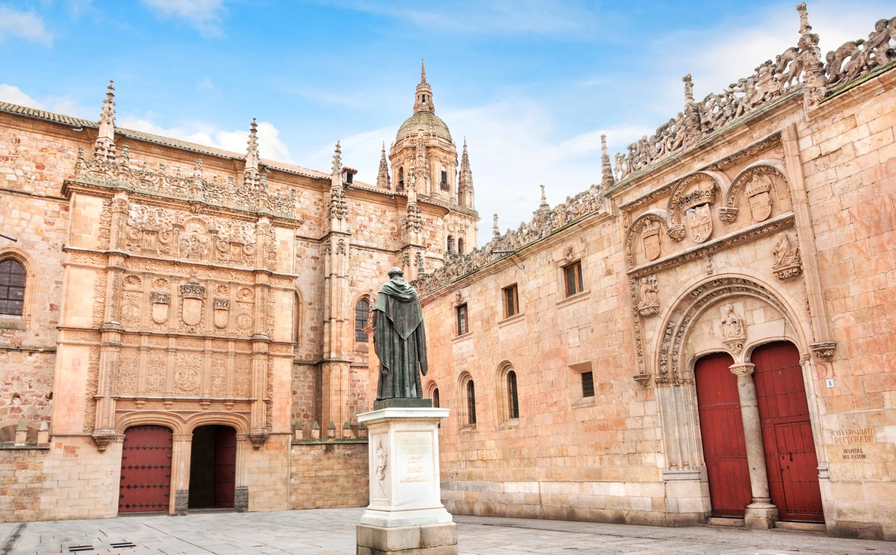
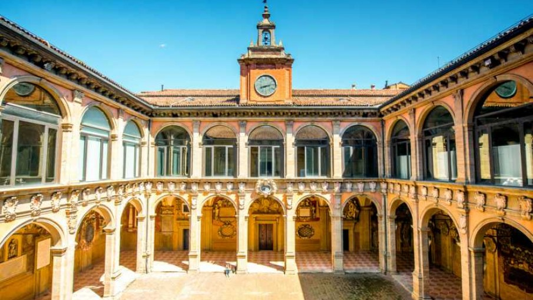

Comunidad Laboral
Cursos y posgrados
Universidades en el extranjero
Universidad de Salamanca, España.
La Universidad de Salamanca, es una universidad pública española emplazada en la ciudad de Salamanca. Es la universidad más antigua en operación de España y del mundo hispánico y la tercera más antigua de Europa. Cuenta con un importante patrimonio material en forma de edificios históricos y espacios emblemáticos que aún se encuentran en activo y reciben cada día la visita de cientos de personas, bien porque quieran apreciar su valor artístico o histórico, o bien porque tengan que realizar alguna actividad académica en ellos. Destacan especialmente el Edificio de Escuelas Mayores con su fachada plateresca, en el interior del cual se encuentra la Biblioteca General Histórica con 2.774 manuscritos, 483 incunables y alrededor de 62.000 volúmenes impresos entre los siglos XVI y XVIII. Visita obligada es también el Patio de Escuelas Menores que alberga en una de sus salas la conocida pintura del ‘Cielo de Salamanca’, obra atribuida a Fernando Gallego que recoge temas astronómicos y astrológicos. Ofrece diversos cursos de especialización, virtuales y a distancia,sobre Derecho del Trabajo; así como una maestría y un doctorado sobre esta materia. Para consultar información sobre los cursos, la historia de la Universidad y cómo es la vidad universitaria en Salamanca, visiten el sitio web oficial de la Universidad de Salamanca
Universidad Autónoma de México, México.
La Universidad Autónoma de Mexico, es una universidad pública mexicana. Destaca como una de las mejores universidades de América Latina y de las más activas en materia artística, tecnológica y de investigación.
Mantiene una tasa de aceptación muy selectiva de los aspirantes al nivel superior; debido a una alta demanda y a su carácter público, laico y gratuito.
Por otro lado, tiene la mayor matrícula estudiantil de todas las universidades de América Latina, y cuenta con uno de los campus más grandes del mundo.
Sus numerosas publicaciones e investigaciones en todas las áreas del conocimiento la convierten en la institución mexicana con mayor producción científica. Todos los mexicanos laureados con el Premio Nobel han pasado por esta casa de estudios.
Ofrece diversos cursos de especialización, maestrías y doctorados.
Para consultar información sobre los cursos, visiten su sitio web oficial
Universidad de Bologna, Italia.
La Universidad de Bologna, es una universidad pública italiana situada en la ciudad de Bolonia, considerada la más antigua de Europa.
Fue fundada en 1088 como una agrupación de estudiantes por Irnerio de la Orden del Carmen, partiendo de las escuelas municipales y adquiriendo el grado de Universidad; sus estatutos datan de 1317.
Está entre las grandes universidades europeas como las de Oxford, París, Salamanca o Cambridge, creadas a propósito de su ejemplo.
La universidad ofrece cursos de Antropología, Artes, Economía, Derecho, Medicina, Farmacia, Matemática, Ingeniería, Agronomía, Veterinaria y Pedagogía, contando con veintinueve colegios mayores, entre los cuales destaca el más antiguo del mundo que sigue en funcionamiento.
Actualmente la Universidad de Bolonia cuenta con más de 100,000 estudiantes en sus colegios, en sus centros de Europa localizados en Italia en las ciudades Imola, Rávena, Forlì, Cesena y Rimini así como en su centro de ultramar localizado aquí, en la Ciudad de Buenos Aires.
Ofrece diversos cursos de especialización, maestrías y doctorados; así como la posibilidad de aprender uno de los idiomas más importantes en la rama del Derecho.
Para consultar información sobre los cursos, y de la historia de esta extraordinaria Universidad, visiten su sitio web oficial